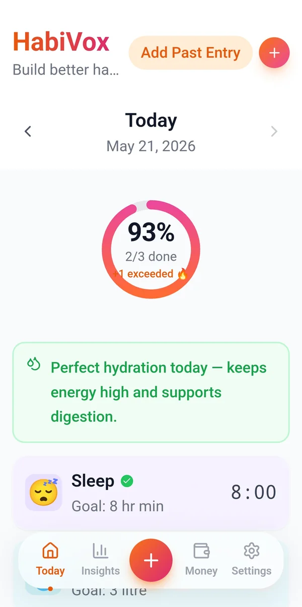
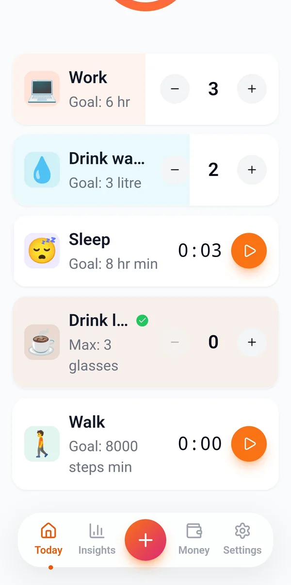
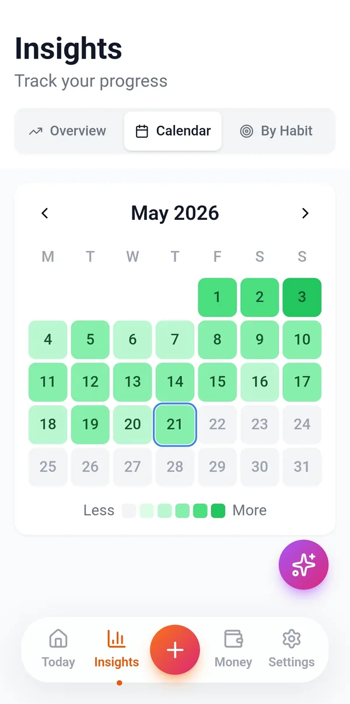
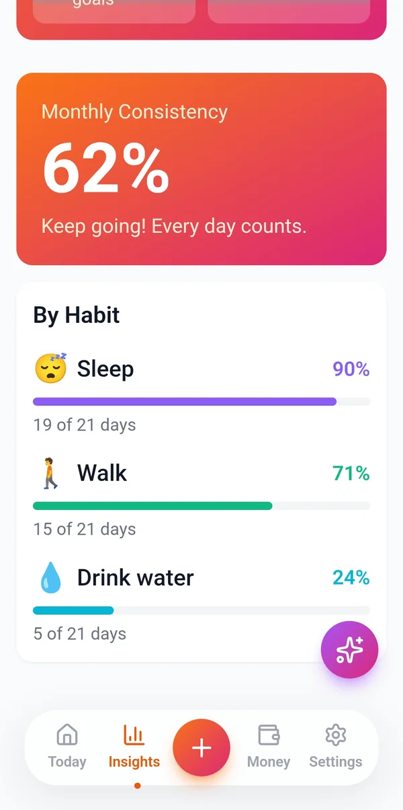
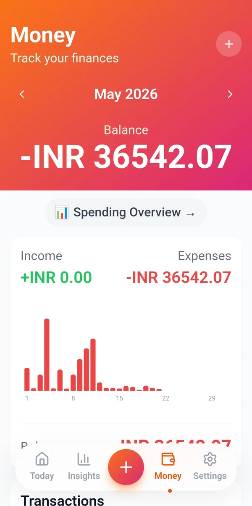
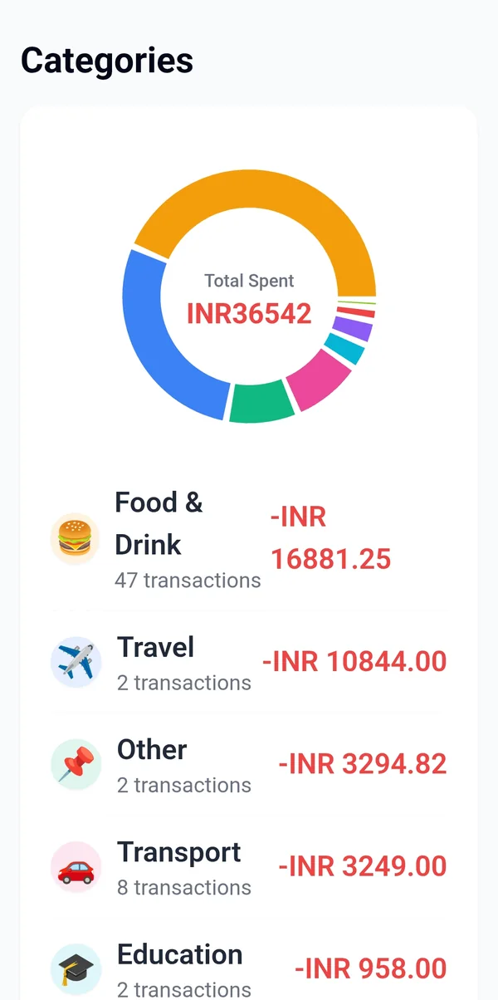

Habits and money, in one app.
Log habits and expenses in a few taps. HabiVox shows which days you slip and where your money goes.
Free on Android.

Habits
Track each habit the way you measure it.
Some habits are a yes or no. Others are litres or minutes. Pick the type that fits.
Yes or no
Mark it done for the day.
Count
Tap plus or minus as you go.
Amount
Steps, litres, calories or your own unit.
Duration
Start the timer and it logs the minutes.
Quit habits
Set a daily maximum, like 3 cups of coffee.
Reminders
Pick a reminder time for each habit.

Insights
See the days you slip, not just the streak.
A monthly calendar shades each day by how much you got done.
Calendar view
The whole month at a glance.
Per habit
Days hit out of days tracked.
Monthly consistency
One number for the whole month.
Past entries
Forgot yesterday? Log it later.


Money
Know where the money went this month.
Add income and expenses as they happen. HabiVox sorts them by category.
Income and expenses
With a running balance.
Categories
A total for food, travel and the rest.
Cash flow
Spending charted day by day.
10 currencies
Including INR, USD, EUR and GBP.


AI Coach
A weekly plan built from your own data.
Once a week, the coach reads your last seven days and plans each day ahead.
A task for every day
Timed around your own daily schedule.
Today's focus
The task for today, with live progress.
This week so far
Flags habits that are starting to slip.
Refresh when you need
Once a day, up to 3 times a week.
Included free. No API key or setup needed.
Insights
Track your progress
Your AI Coach
Weekly Analysis
You drank water 6 of 7 days and averaged 7.5 hours of sleep. Evening walks slipped twice, so this week starts small.
Next weekly update: Wed, 14 Oct
07:00 Drink a glass of water after waking. 19:30 Walk for 20 minutes before dinner.
No habits slipping right now. Keep the momentum going.
Action Plan
07:00 Water after waking. 22:30 Phone away, lights out by 23:00.
07:00 Drink a glass of water after waking. 19:30 Walk for 20 minutes.